Background Info
LA Crime Data:
Los angeles county is an area with over 10 million inhabitants (1), and is the third largest city by
GDP in the world (2). As the population continues to grow, efforts to track, and understand criminal
activity are important at curtailing this phenomenon, and make the city more attractive to businesses,
tourism, and investments. In the wake of mass shootings, weapon related crimes has become an important
political issue. Gun's have been at the center of this discourse, although an analysis of the top 10
weapons reported in crimes has been poorly documented. The aim of this study is to analyze over 2
million crime incidents reported in LA between 2010 - 2019 (3), and:
- Describe the top 10 crimes involving weapons.
- Describe the top 10 weapons involved in these crimes.
- Determine how these weapons have been reported over time.
- Determine the age distribution of victims.
- Determine if women are victimized at higher levels than men in weapon related crimes.
- Describe the ethnic makeup of victims.
- Describe the proportion of weapons used in the top 10 crimes.
- Provide an interactive map that allows users to explore weapon related crimes reported in 2019.
- Determine which areas had the highest crime rates
- Describe the types of crimes committed by area.
Why is this important?
Understanding these trends can help inform local policies, as well as recourse allocation dedicated at
strategies to reduce these incidents.
Resources & Citations
- 1. "QuickFacts Los Angeles County, California; California". Retrieved Dec 23, 2019.
- 2. Metropolitan areas by GDP. Retrieved Dec 23, 2019.
- 3. Data.lacity.org. Retrieved Dec 2, 2019.
- 4. Leaflet. Retrieved Dec 2, 2019.
- 5. GREMLING, N. U. M. A. (2019). LEAFLET COOKBOOK: Recipes for creating dynamic web maps. S.l.: LOCATE PRESS.
- 6. Los Angeles Police Department Area Stations Tomas Bros. Maps. "LAPD Area Stations." LAPD/ADSD/GIS MAPPING, Retrieved from http://www.lapdcadets.com/divisions/, Date of Access (12-24-2019).
Research Objectives
- Describe the top 10 crimes involving weapons.
- Describe the top 10 weapons involved in these crimes.
- Determine how these weapons have been reported over time.
- Determine the age distribution of victims.
- Determine if women are victimized at higher levels than men in weapon related crimes.
- Describe the ethnic makeup of victims.
- Describe the proportion of weapons used in the top 10 crimes.
- Provide an interactive map that allows users to explore weapon related crimes reported in 2019.
- Determine which areas had the highest crime rates
- Describe the types of crimes committed by area.
Methods
Crime data filtered for incidents with weapons
The data was accessed from Data.la.city.org (3) Crime Data from
2010 to Present This dataset contains incidents of crimes reported in the City of Los Angeles
between 2010 - 2019. The dataset is refreshed weekly, and is transcribed from crime reports typed on
paper. The dataset was access the first week of Dec 2019, so the entire dataset for 2019 was
incomplete at the time of this analysis. The dataset originally contained 2.1 million records, and 28
features. Only thirteen features were used in this study: 'Date Rptd', 'Vict Age', 'Vict Sex', 'Vict
Descent', 'Crm Cd 1', 'Weapon Used Cd', 'Weapon Desc', 'Status', 'Status Desc', 'AREA NAME' , 'LAT',
'LON'. The analysis excluded records that had missing values for these features: 'Weapon_Desc',
'Vict_Sex', 'Vict_Desc', 'Crime_Code', 'Status'.
Exclusion and Inclusion Criteria for 2019 Data
Since the 2019 data was incomplete at the time of this analysis, all data for 2019 was excluded for the first seven objectives described above. The interactive map in this post (objective 8) only displays data from 2019, as this provides a representative sampling of incidents in LA. All years were included in the last two objectives (9 and 10).
Exclusion and Inclusion Criteria for Victim
The dataset contained 5 categories for sex ('M', 'F', 'H', 'N', 'X'), no documentation was available to clarify the H and N categories (x is unknown). Consequently, only 'M', and 'F' categories were included in this study, and the rest were excluded.
Interactive map using leaflet
To enable users to explore the distribution of weapon related crimes, the javascript Leaflet library was used as described (4, 5). Only data from 2019 that was used in this interactive plot. Exclusion and inclusion criteria from above were applied here as well. Up to forty incidents are displayed at a given time, not all weapon categories will have markers, as they may not have been reported at the time of this study.
Analysis
Python was used in this project. Data was loaded and manipulated using the pandas library. The matplotlib and seaborn libraries were used to visualize data. The scipy and statsmodels.api libraries were used in the statistical analysis. A qqplot was used to evaluate normality, while the Barlette's test was used to test for equal variance. A students t-test for two independent samples was used to determine statistical differences between victim sex.
Results: All Crimes
Total number of crimes in LA appear to increase between 2013-2018
To understand the overall crime rates in LA, the total counts of crimes per year were plotted, and for
comparison, the total annual crimes that involve weapons were included. To total counts appear to drop
between 2010 to
2013, and then increase an on annual basis. To total crimes decrease by 1000 between 2017 to 2018,
whereas the number of weapon reported crimes increased by nearly 4000 (Figure 1).
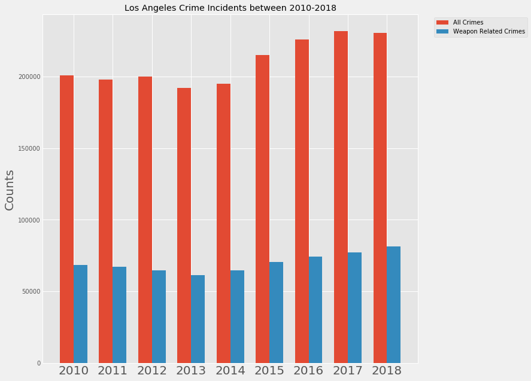
{kind=link}
Figure 1. Total weapon related crimes reported in LA between 2010 - 2018.
Battery and vehicle related thefts listed in top 3 crimes. Between 2010 - 2018, theft was the most prevalent category in the top 10 list (5/5), and includes burglary from vehicle, stolen vehicle, burglary, theft, and identity theft. These figures are a reminder to be cautious when storing anything in vehicles, and to properly secure our homes, and businesses.Table 1. Top 10 crime incidents in LA between 2010 -
2018.
{kind=link}
Results: Weapon Related Crimes
Battery, Spousal Abuse, and Assault with a deadly Weapon were part of the top 10 weapon
related crimes reported between 2010 - 2018 were
In the dataset, there were 129 unique crime codes, more than half of which had fewer than 100
incidents in this reporting period (analysis not shown). The top 10 weapon related crimes had more
than 9000 incidents reported, and some of the categories appear redundant at first glance. For
example, domestic violence appears twice (#2 and # 6), robbery twice (#4 and # 9), and assault twice
(#3 and #10). The fact that these categories appear multiple times are indicative of their prevalence
in society. Battery and the threat of physical harm (Assault) are most represented in this dataset,
and would be a potential target for policy makers at addressing anger and violence.
Table 2. Top 10 weapon related crimes reported between 2010 - 2018.
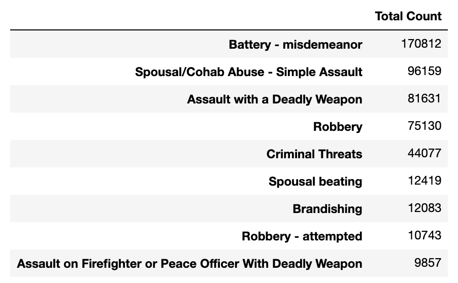{kind=link}
Strong-Arm, Guns, and Knives top the weapons's list
There were Seventy-Nine unique weapons reported in crimes during 2010-2018. Twenty-nine of these were
reported more than 1000 times, and the use of ones body to attack or threaten to attack, was the top
weapon reported. Although, the use of fire arms was listed 4 times (4, 5, 8, 10), to total sum of
these incidents (54,321) is a 7th of those reported with strong-arm (382,711). It is possible this
lower levels of gun violence may be attributed to gun control measures, or lack of access to guns.
Moreover, the dataset did not contain information about the perpetrators, and if this were available,
it would be helpful to know if the criminal knew the victim, and was a non-spouse/partner family
member, as this would be helpful in measure to counter violence.
Table 3. Top 10 weapons reported in crimes between 2010 - 2018.
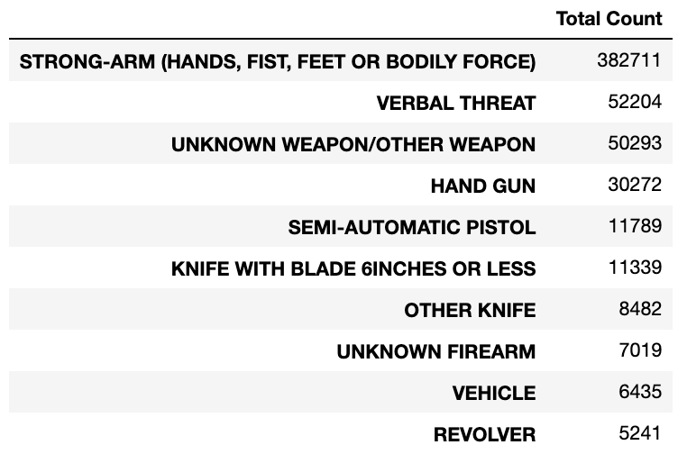{kind=link}
The use of strong-arm in crimes appears to increase, whereas the others weapon categories
seem stable
When comparing the incidents of specific weapons in reported crimes, all but strong-arm seem to be
stable (Figure 2). The total number of crimes involving strong-arm increase from 2013 - 2018, and this
may account for the increase in weapon related crimes despite the reduction in total overall crimes
between 2017-2018 (Figure 1).
{kind=link}
Figure 2. Top 10 weapons reported in crimes between 2010 - 2018.
Strong-Arm, Verbal Threats, Knifes, Hand guns, and Vehicles seems to increase in criminal
reports from 2014 - 2018.
As indicated in Figure 2, strong arm seems to increase towards the end of this reporting period. What
was not apparent were the increase in reports involving threats, knifes, hand guns, and vehicles.
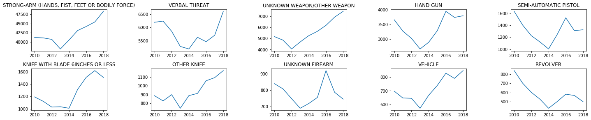
{kind=link}
Figure 3. Trends in weapon usage between 2010 - 2018 for the top 10 weapons.
Victims in this dataset are middle aged.
The mean age of weapon related crimes was 33.0 years old ± 16.7 (33.8 for mean, and 32.9 for women
Table 4, 5), while the mean age for all victims
was 31.8 years old ± 20.6. It is important to note that when the age of the victim was unknown, zero
was reported as their age, and this was the case for 29688 weapon related incidents in this dataset.
Interestingly, it appears that there are more younger female victims of weapon related crimes (figure
4), since the left hand skewing in the female victim histogram is greater than that for men, which may
suggest younger women are at greater risk to weapon related violence.
Table 4. Victim Age descriptive statistics for weapon related incidents reported between 2010 - 2018.

Table 5. Mean ages of victims of weapon related crimes by sex (2010 - 2018).
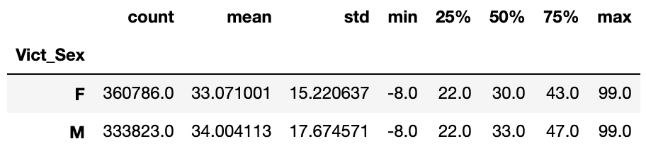{kind=link}

Figure 4. Victim age distribution by sex (2010 - 2018 crime reports).
There is significant difference in the mean age of victims of weapon related crimes by
sex.
To determine if there was indeed a statistically different mean age of victims by sex, a Welch’s
t-test for independent samples was conducted. A qqplot was used to evaluate normality in the dataset
(Figure 5), and a Barlette's test was conducted to evaluate the variance in the two groups. These
tests confirm the need to use the Welch's test, which indicated to reject the null hypothesis that
there were no difference in the mean age of victims in weapon related crimes by sex (p = 2.912e-89).
There is a significant difference in the age of female and male victims in weapon related crimes.
{kind=link}
Figure 5. QQPlots for Victims Ages by Sex (2010 - 2018 crime reports).
Most of the victims are either Hispanic, Black, or White.
The top 3 racial groups in LA are also the top 3 victims of weapon related crimes (Table 6, Figure 6).
Hispanic victims account for a good portion of the data, despite the fact that white alone account for
52.4% of the city population (1). Poverty rates might be responsible for the higher rate of
victimization in the hispanic population.
Table 6. Victims of weapon related crimes by ethnicity and/or race (2010 - 2018).
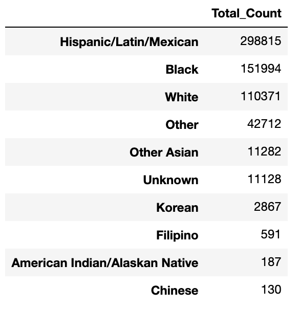{kind=link}
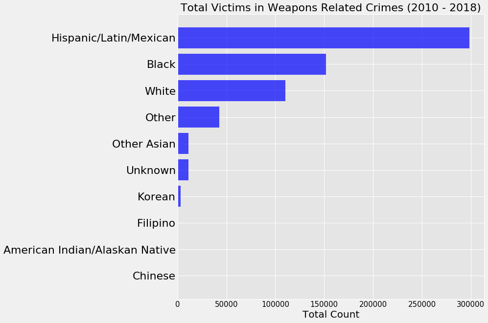
{kind=link}
Figure 6. Victims of weapon related crimes by ethnicity (2010 - 2018 data).
Strong-arm is represented in most of the crime categories.
Strong-arm was the overwhelming majority in spousal abuse, battery, robbery, and assault with a deadly weapon (Table 7, Figure 7). Firearms were the next category with a good proportion within the to 10 crimes involving weapons (robber, assault with a deadly weapon, assault on a peace officer). Verbal threats was the predominant category in crimes involving criminal threats, and the use of vehicles was overwhelming recoded in cases involving assault with a deadly weapon. Unknown weapons had the highest proportion of cases in crimes involving assault on a firefighter or peace officer with a deadly weapon. It begs the question, how can you have an unknown weapon, but record the incident as an assault with a deadly weapon criminal code.
Table 7. Proportion of weapons reported by crime (2010 - 2018).
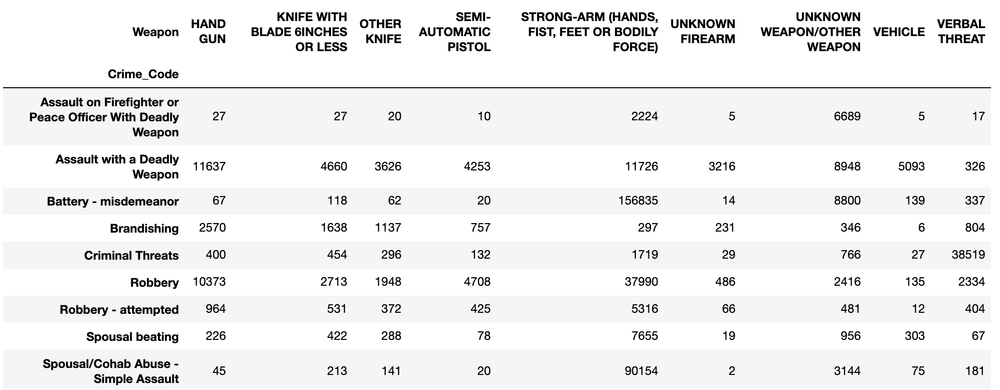{kind=link}
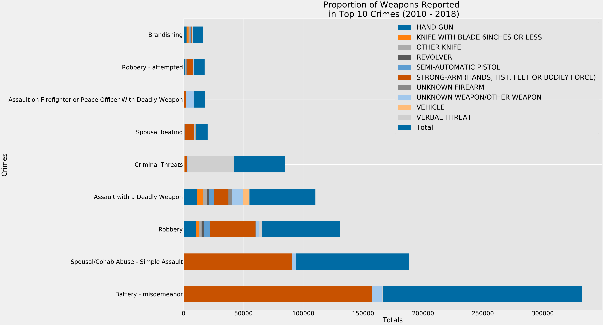
{kind=link}
Figure 7. Proportion of weapons reported in top 10 crimes between 2010 - 2018.
Interactive map to explore 2019 crimes by weapon category.
The next objective of this study is to determine if there are regional differences in crimes involving weapons. To this end, the entire dataset, including 2019 values, were analyzed. Up to forty randomly selected incidents (markers) are displayed at any given time, and not all weapon categories will have markers, as they may not have been reported at the time this study was published.
The Southwest and 77th street areas have the highest total crimes, and highest weapon related crimes in LA (2010 - 2019).
There are 21 areas listed in this dataset (LAPD station map Figure 9). The areas with the highest number of total crimes, and weapon related crimes was 77th street, Southeast, and Southwest (Figure 10, Figure 11). Although the data for these areas trend together, the data also indicate that an area can rank higher in weapon related crimes, but rank lower in total overall crimes. An example of this would be Hollenbeck, which ranks 9ths in weapon related crimes, but 21 in total overall crimes. Taken together, this data suggest that weapon related incidents do not trend with total overall crimes, and that some areas are affected by a unique set of crimes.
{kind=link}
Figure 9. Map of LAPD Beauraus and Areas.
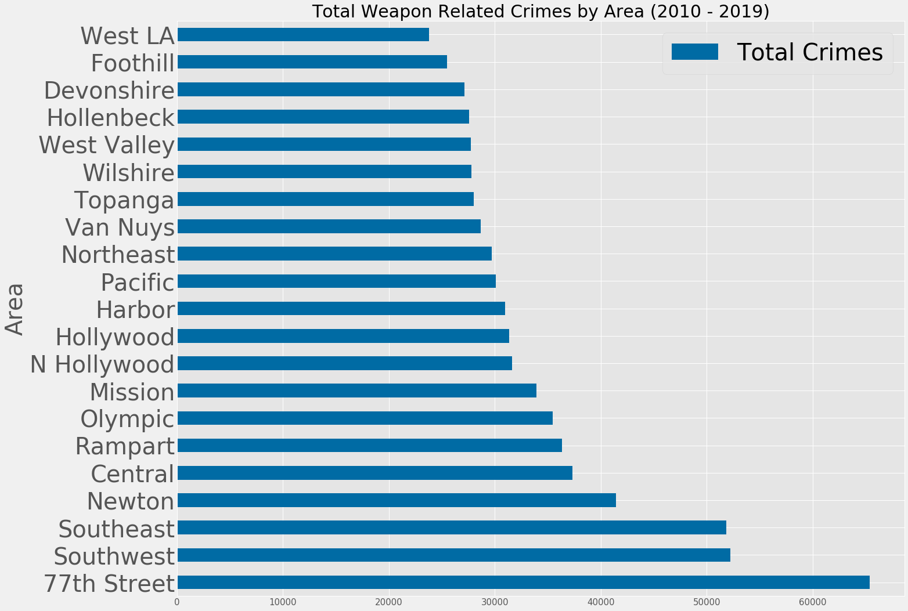{kind=link}
Figure 10. Total weapon related crimes by area (2010 - 2019).
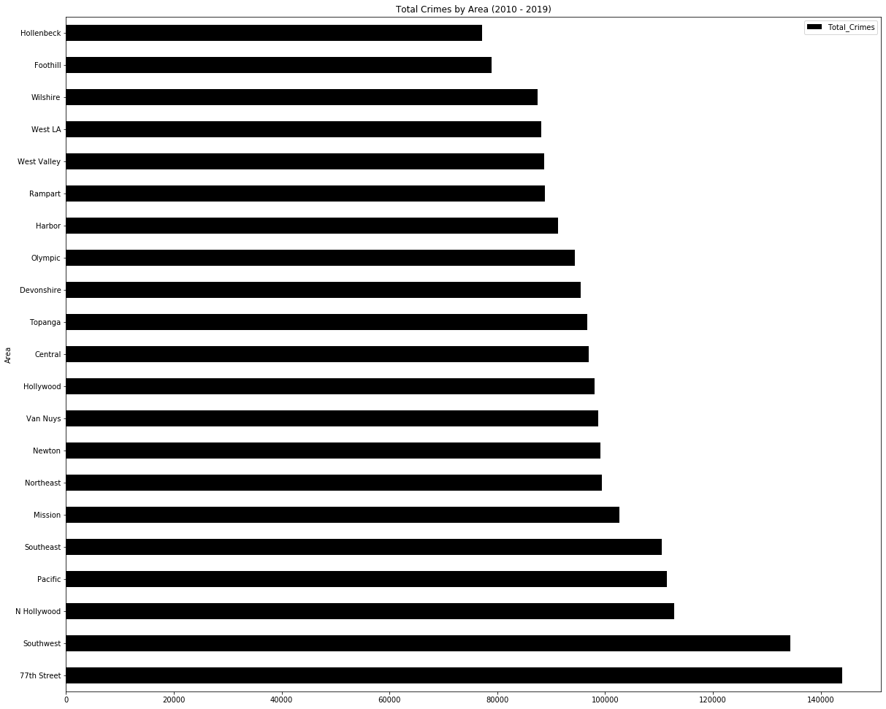{kind=link}
Figure 11. Total crimes by area (2010 - 2019).
The use of weapons in crimes seems proportional for all crimes reported between 2010 - 2019.
To characterize the types of crimes committed in other areas, proportional bar plots were generated by area.
{kind=link}
Figure 12. Proportion of weapons used in crimes by area (2010 - 2019).